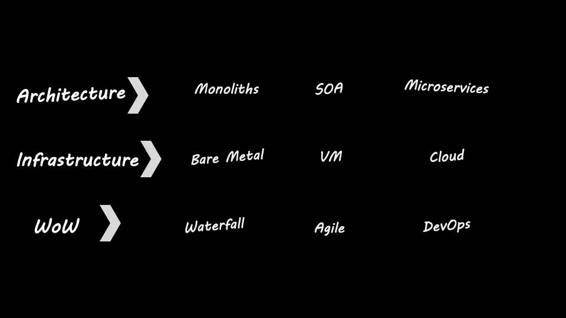

name: inverse layout: true class: center, middle, inverse --- #Continuous Everything – DevOps & SRE .footnote[Stefan Friese - Code University of Applied Science] --- template: inverse # DevOps Building Blocks Let's look at how the infrastructure, CI/CD, architecture evolved over time. --- # Infrastructure Cloud, Container Orchestration, ... <br> The mid-2000s saw the advent of a new paradigm in computing: “the cloud" with on demand self service and rapid elasticity. -- .left[ * 2001 - VMWare releases for server market * 2005 - Release of IaC config management tool Puppet (Chef 2009, Ansible 2012, Terraform 2014) * 2006 - Amazon launches Elastic Compute Cloud (EC2) * 2013 - Docker * 2014 - Google introduces Kubernetes based on experience gained through Borg and other internal Google systems * 2015 - Google publishes the Borg Paper (https://ai.google/research/pubs/pub43438) ] --- # Architecture -- .left[ * 2011 - A workshop of software architects held near Venice in May 2011 used the term "microservice" to describe what the participants saw as a common architectural style that many of them had been recently exploring. * 2011 - Adam Wiggins published the Twelce-Factor App methodology for building software-as-a-service (https://12factor.net/). * 2015 - Around 2015, serverless architecture comes into being. * 2015 - Cloud Native Computing Foundation is founded. * 2016 - Reactive Manifesto (https://www.reactivemanifesto.org/) ] --- # Way of Working -- .left[ * 1985 - GNU manifesto and the Free Software Foundation is launched * 1990s - Two Pizza Team (Bezos, Amazon) * 1998 - JUnit (based on SUnit which was written 1994) * 1999 - CI was first written in Kent Beck's Extreme Programming book (http://tiny.cc/7sycfz) * 2001 - Agile Manifesto (https://agilemanifesto.org/) * 2010 - Jez Humble and David Farley published Continuous Delivery book (http://tiny.cc/poycfz) * 2016 - Google publishes SRE book * 2017 - Weaveworks introduces term GitOps ] --- # Changes in Mindset <br/><br/>  --- # Changes in Mindset -- .left[ From: * "Scale Up" >> get a bigger 'computer' * Monolith will well-defined layers >> each layer owned by an expert team * Design for Stability ] -- .left[ To: * "Scale Out" >> get more 'computers' * Break transactions into services >> each service owned by a “two pizza” team * Failures will happen >> design for resilience ] --- # DevOps -- DevOps is the combination of cultural philosophies, practices, and tools that increases an organisation’s ability to deliver applications and services at high velocity. -- DevOps represents a change in IT culture, focusing on rapid IT service delivery through the adoption of agile, lean practices in the context of a system-oriented approach. -- DevOps emphasises people (and culture), and seeks to improve collaboration between operations and development teams. -- DevOps implementations utilise technology — especially automation tools that can leverage an increasingly programmable and dynamic infrastructure from a life cycle perspective. --- template: inverse # DevOps Core Values: The Three Ways .left[ 1. Systems Thinking 2. Amplifying Feedback Loops 3. A Culture of Continuous Experimentation and Learning ] --- template: inverse # Key DevOps Methodologies .left[ 1. People over Process over Tools 2. Continuous Delivery 3. Lean Management 4. Visible Ops style Change Control 5. Infrastructure as Code ] --- template: inverse # SRE - Site Reliability Engineering -- SRE is what happens when you ask a software engineer to design an operations team. <br><br> One could view SRE as a specific implementation of DevOps with some extensions. --- template: inverse # SRE .left[ * At Google, independent function maintaining large product systems. * Software engineers think and act as SRE until it is beyond their scale. * Defines, builds and evolves best practices, standards and tool sets to improve availability, performance and operational efficiency ] --- template: inverse # IaC - Infrastructure as Code -- .left[ * Template code should be in a repo * Track issues and history * Hook into CI/CD pipelines ] --- template: inverse # IaC - Imperative and Declarative Approaches .left[ * Imperative - also known as “procedural,” this is an approach where commands desired to produce a state are defined and executed. Examples: Chef and Ansible * Declarative - also known as “functional,” this is an approach where you define a desired state and the tool converges the existing system on the model. Examples: AWS CloudFormation and TerraForm ]